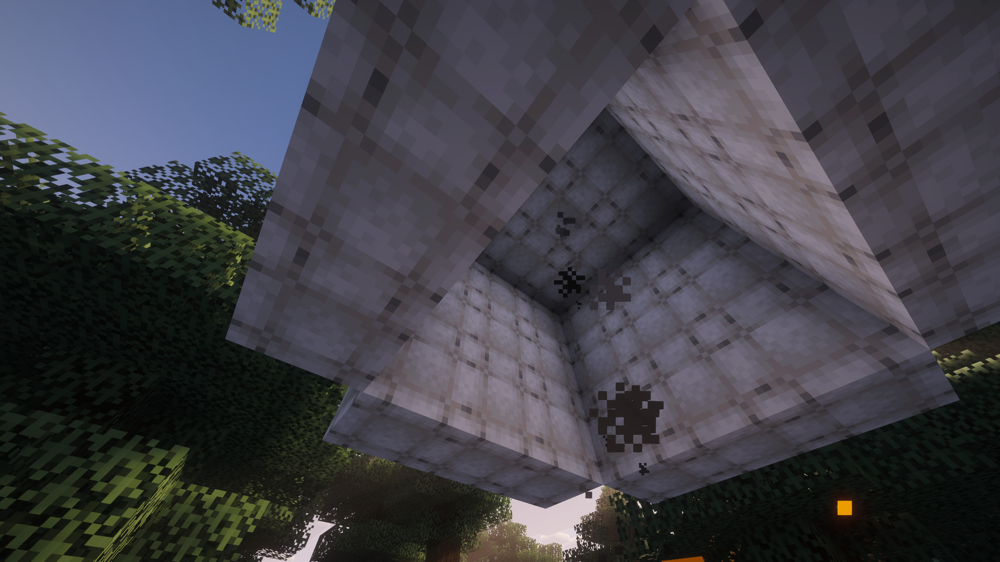
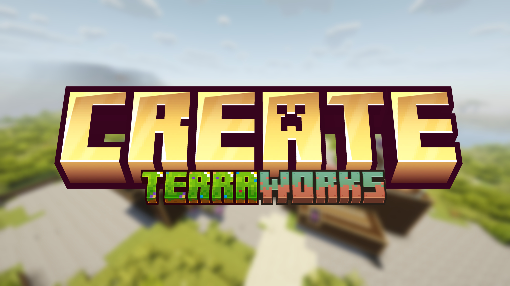

Aeronautics Hot Air Fix
Simple Minecraft mod that fixes an Iris shader bug with Create: Aeronautics

I made this website to learn both HTML and CSS, because I got bored.
I started out sometime in 2022-2023 with
Lua, which I was pretty good at, for that time.
Sometime later, I just didn't have anything to do with it anymore.
Now I've been occasionally developing things again, but I am still way better at managing things.
I use Arch btw. Don't worry, I don't say that to everyone.
Simple Minecraft mod that fixes an Iris shader bug with Create: Aeronautics

Massive Minecraft modpack with Create that adds and reworks tons of content
